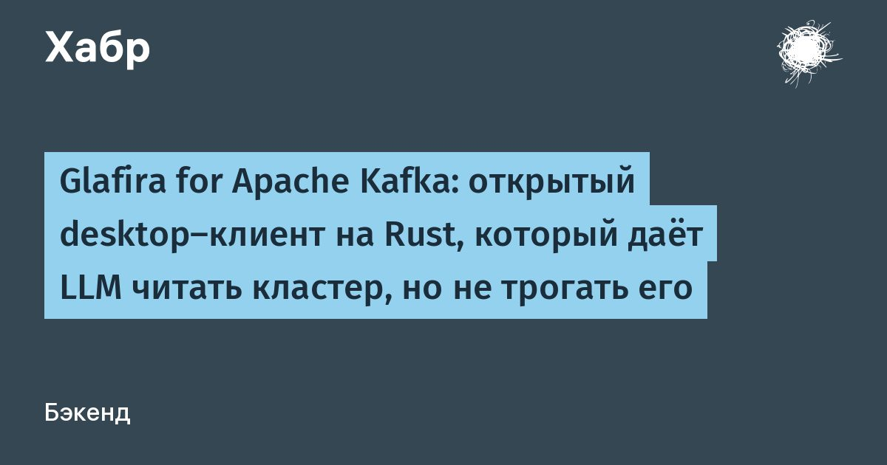

Glafira for Apache Kafka: открытый desktop-клиент на Rust, который даёт LLM читать кластер, но не трогать его
Glafira for Apache Kafka — бесплатный desktop-клиент для Kafka под macOS, Windows и Linux: Tauri 2, Rust, librdkafka, код открыт под Apache 2.0.
Просмотр сообщений с фильтрами и JSONPath, Producer с шаблонами, consumer-сессии, топики, группы, сброс оффсетов и встроенная проверка кластера.Самое интересное — MCP-шлюз для LLM.
Claude, GigaCode, Cursor или любой другой клиент с поддержкой MCP подключается к Glafira, читает метаданные кластера, находит проблемы, оставляет замечания и предлагает изменения.
Применить что-либо модель не может: у неё физически нет ни одного изменяющего инструмента, а предложение открывается заполненной формой, где кнопку нажимает человек.
В статье — как это устроено, почему это гарантия, а не обещание, и два настоящих диалога с Claude Code.
Читать далее